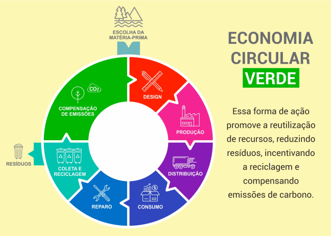
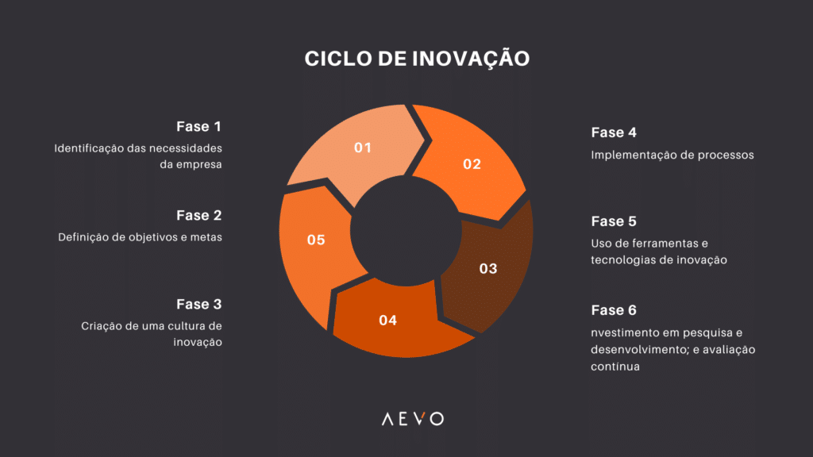
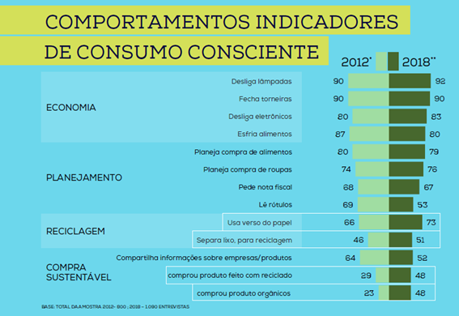

Economia Circular e Tecnologia: Caminhos para um Consumo Sustentável
Em um mundo marcado pelo rápido avanço da tecnologia e altos níveis de consumo, é necessário repensar os comportamentos de produção, utilização e descarte de recursos, que aumentam o desperdício e o impacto ambiental.
A economia circular surge como uma alternativa ao modelo linear tradicional, ao concentrar-se na reutilização, reciclagem e gestão inteligente de recursos.
Com a ajuda das novas tecnologias, essas práticas estão mudando a forma de produção e o comportamento dos consumidores — mostrando que é possível unir desenvolvimento, bem-estar e sustentabilidade no dia a dia.
O que é a economia circular?
A economia circular é um modelo econômico que busca fechar o ciclo de vida dos produtos, promovendo o uso eficiente dos recursos e a redução dos impactos ambientais.
Em vez de descartar materiais após o uso, ela incentiva a reutilização, a reciclagem e o compartilhamento.
Baseia-se em três princípios fundamentais:
- Eliminar o desperdício e a poluição;
- Manter materiais em uso pelo maior tempo possível;
- Regenerar os sistemas naturais.
Dessa forma, o valor dos recursos é preservado e a dependência de matérias-primas virgens diminui.
A economia circular já se faz presente em diversas práticas cotidianas — como o uso de embalagens retornáveis, separação e reciclagem de resíduos, consumo consciente e reaproveitamento de materiais.

Fonte: FIOCRUZ (2020)Inovações tecnológicas como motor da circularidade
As inovações tecnológicas vêm se consolidando como elementos centrais para a transição rumo a uma economia verdadeiramente circular.
Diferente do modelo linear tradicional — baseado em extrair, produzir, consumir e descartar — a circularidade busca prolongar o ciclo de vida dos produtos e minimizar o desperdício.
Entre os principais avanços estão:
- Materiais inteligentes e biodegradáveis, capazes de se decompor rapidamente ou serem reutilizados em novos ciclos produtivos;
- Plataformas digitais que estimulam o consumo colaborativo (compartilhamento de bicicletas, roupas, carros e eletrônicos);
- Internet das Coisas (IoT) e Inteligência Artificial (IA) aplicadas ao monitoramento de cadeias produtivas, otimizando o uso de insumos e reduzindo falhas.
Mais do que promover uma mudança técnica, essas inovações impulsionam uma transformação cultural.
A tecnologia torna-se não apenas um meio de “produzir de outro jeito”, mas um instrumento para incentivar comportamentos conscientes e colaborativos, unindo inovação e sustentabilidade.

Fonte: ECOOAR (2022)Do consumismo ao consumo inteligente
A economia circular está diretamente ligada à transição do consumismo para o consumo inteligente.
Enquanto o consumismo se baseia em comprar, usar e descartar rapidamente, a economia circular propõe uma nova lógica de durabilidade, reaproveitamento e redução do desperdício.
Quando a tecnologia reforça o consumismo
- Influenciadores digitais e tendências de redes sociais que incentivam compras impulsivas;
- Satisfação psicológica associada ao ato de comprar;
- Lançamentos frequentes de produtos tecnológicos que estimulam o desejo de atualização constante (como novos modelos de smartphones).
Quando a tecnologia promove o consumo inteligente
- Aplicativos que mostram a pegada ecológica de produtos;
- Plataformas de revenda e aluguel, que ampliam a vida útil dos bens;
- Ferramentas que promovem transparência sobre origem e impacto ambiental dos produtos.
Assim, o consumo deixa de ser guiado apenas pelo desejo de possuir e passa a ser mais consciente e funcional — orientado pela necessidade real e pela responsabilidade ambiental.

Fonte: AEVO (2023)Conclusão
A transformação para uma sociedade mais sustentável depende de uma mudança profunda na forma como produzimos, consumimos e descartamos.
A economia circular surge como uma alternativa essencial ao modelo linear, ao reduzir o desperdício e valorizar os recursos naturais.
Com o apoio das inovações tecnológicas, esse modelo torna-se cada vez mais viável — otimizando processos produtivos, desenvolvendo materiais sustentáveis e incentivando práticas como reciclagem, compartilhamento e consumo consciente.
A adoção de atitudes simples — como reduzir o uso de energia, valorizar produtos reciclados e usar transporte coletivo — pode gerar impacto significativo.
Somadas aos avanços tecnológicos e à conscientização coletiva, essas práticas mostram que é possível unir progresso, inovação e preservação ambiental.
Somente assim construiremos um futuro em que desenvolvimento e sustentabilidade caminhem lado a lado, garantindo qualidade de vida para as próximas gerações.
Referências
- ACCENTURE. Waste to Wealth: Creating Advantage in a Circular Economy. New York: Palgrave Macmillan, 2015.
- AEVO. Ciclos de inovação: o que são, etapas e como aplicá-los nas empresas. Disponível em: https://blog.aevo.com.br/ciclos-de-inovacao.
- BRASIL. Ministério da Fazenda. Economia Circular. Disponível em: https://www.gov.br/fazenda/.../economia-circular.
- ECOOAR. Economia circular: verde é o futuro sustentável. Disponível em: https://blog.ecooar.com/economia-circular-verde-e-o-futuro-sustentavel.
- FUNDAÇÃO OSWALDO CRUZ (FIOCRUZ). Dia do Consumo Consciente. Disponível em: https://www.cogic.fiocruz.br/2020/10/15-de-outubro-dia-do-consumo-consciente.
- PAQUET, Renato. Economia Circular: o que é e quais seus benefícios? Disponível em: https://www.creditodelogisticareversa.com.br/post/t-economia-circular-o-que-e-e-quais-seus-beneficios.
- PNUMA – Programa das Nações Unidas para o Meio Ambiente. Global Waste Management Outlook. Nairobi: UNEP, 2015.
- UNINTER. Tecnologia é aliada na prática do consumo sustentável. Disponível em: https://www.uninter.com/noticias/tecnologia-e-aliada-na-pratica-do-consumo-sustentavel.